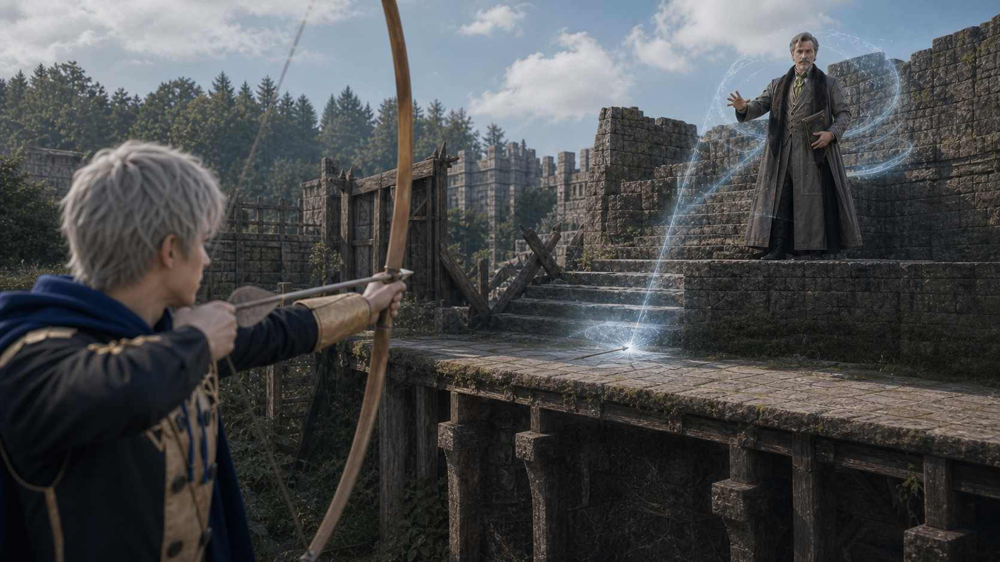

Shot033C keyframe
qa_passed / P0
episodes/EP02/generated/mock_battle_production_keyframes_2026-07-17/Shot033C_keyframe.pngAshe 压 Hanneman 施法角度

qa_passed / P0
episodes/EP02/generated/mock_battle_production_keyframes_2026-07-17/Shot033C_keyframe.png
ash-gray-haired archer, observation high point and suppression shots
assets/characters/blue_lions/Ashe/academy/selected.png
older scholarly teacher, wind/Sagittae angle on raised heal-tile platform
assets/characters/church_of_seiros/Hanneman/academy/selected.pngEstablish the exact geography for Ashe Suppresses Hanneman: Ashe fires controlled arrows to suppress Hanneman casting angle; wind magic bursts on stone steps.
episodes/EP02/generated/mock_battle_production_keyframes_2026-07-17/Shot033C_A_keyframe.png
Show the tactical peak with Ashe, Hanneman using their locked character assets and academy costumes.
episodes/EP02/generated/mock_battle_production_keyframes_2026-07-17/Shot033C_B_keyframe.png
End on the reaction or reposition that motivates the next shot while preserving screen direction.
episodes/EP02/generated/mock_battle_production_keyframes_2026-07-17/Shot033C_C_keyframe.png